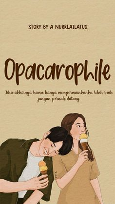
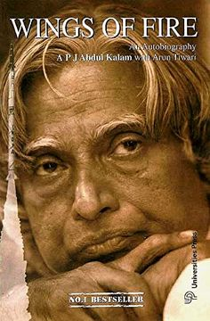

A thousand Boy Kisses
A huge smile spread across my lips, and a flood of pure happiness washed
over me. Unable to resist, I crashed my lips to Poppy’s waiting mouth. The
minute I tasted her sweet taste on my lips, a deep peace filled me from within.

Opacarophile
If you've ever been captivated by the setting sun's charm, entranced by the shifting hues and stunning play of light, you might just be an opacarophile.
An opacarophile is someone who finds beauty in sunsets, entranced by the shifting hues that dance across the sky as the day makes way for the night.

Wings Of Fire - APJ Abdul Kalam Autobiography
Wings of Fire (1999), is the autobiography of the Missile Man of India and President of India, Dr. A. P. J. Abdul Kalam. It was written by him and Arun Tiwari.[1]
In the autobiography, Kalam examines his early life, effort, hardship, fortitude, luck and chance that eventually led him to lead Indian space research, nuclear and missile programs. Kalam started his career, after graduating from Aerospace engineering at Madras Institute of Technology, at Hindustan Aeronautics Limited and was assigned to build a hovercraft prototype. Later he moved to ISRO and helped establish the Vikram Sarabhai Space Centre and pioneered the first space launch-vehicle program. During the 1990s and early 2000, Kalam moved to the DRDO to lead the Indian nuclear weapons program, with particular successes in thermonuclear weapons development culminating in the operation Smiling Buddha and an ICBM Agni.
AXIE OH XOXO
Cello prodigy Jenny has one goal: to get into a prestigious music conservatory. When she meets mysterious, handsome Jaewoo in her uncle’s Los Angeles karaoke bar, it’s clear he’s the kind of boy who would uproot her careful plans. But in a moment of spontaneity, she allows him to pull her out of her comfort zone for one unforgettable night of adventure…before he disappears without a word.